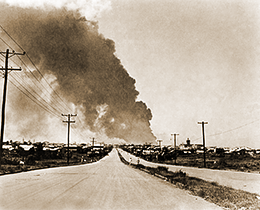

|
j
a v a s c r i p t |
Pg.3/5
February 5, 1945 continued

Sta. Mesa Blvd.
Things quieted down by 1300 except for a few scattered shots and a patrolling B-25 overhead. As the sun sets, fighting has been desultory all afternoon — on a very small scale. 1849: Ambitious street fighting is on with much firing of machine guns, rapid-fire cannons and a few rifle shots as the Americans approach us. Japanese batteries have ceased firing after lobbing 150 to 200 shells from the south and 25 from near us — all into the north side. 1905: Time out ... I hear cheering ... THEY'RE HERE! I ran down Buenos Aires and saw five jeeps, each carrying six soldiers and a mounted machine gun, plus a 37-mm. anti-tank gun in tow. They didn't come via Santa Mesa but by the parallel dirty road of Domingo Santiago. The lieutenant of the lead jeep was on the radio, explaining to headquarters that he had picked up an "American talking civilian" who had offered to lead his patrol to locate the battery near here. The civilian was none other than my brother, Maurice, sitting on the jeep looking as proud as a peacock! Told to use his judgment, the lieutenant jumped back on the jeep, and with the guidance of their new friend, took off in search of the battery ... running straight into the downed bridge. By this time the crowd had swelled to a 1,000 strong, including everyone from Manga Avenue. A lady clasping and unclasping her hands exclaimed: "Finalmente, he visto los Americanos. Gracias a Dios." An excited French lady talking to her little boy: "Mon dieu! Ils sont içi, ils sont içi." After 1,095 days of occupation, a dam burst and words spilled out in a torrent: "Here at last, truly here!" At this point the merry-mad crowd almost ran into a tragic anticlimax. Somewhere behind the Santa Mesa Church, a machine gun fired into the ecstatic crowd, missing everyone as they dispersed every which way. "Asos," [dogs] yelled a guy in Tagalog as he hit the dirt. The jeeps at the downed bridge readied their machine guns. Two went around and three turned back, fully exposing themselves to the shooter, but the Japanese must have fled after expending his last 20 to 30 rounds. Everyone had forgotten about the three Japanese in Piña, one of which fired a single rifle shot that sailed through the crowd harmlessly. Hardly anyone noticed it, but the bullet that went into the Bachrach garden told me all I needed to know. . . . 1946: Night has fallen rapidly as I write this at full speed. The Japanese on the south side (Intramuros) have opened up with another vicious and unopposed bombardment of the north — mainly near Santo Tomas. Mrs. Feldmann asked: "But do they know what they are firing at?" "Madam, they just started a fire ten minutes ago on our side," I answered. "The two houses burning are civilian properties." |
|
|
|
|